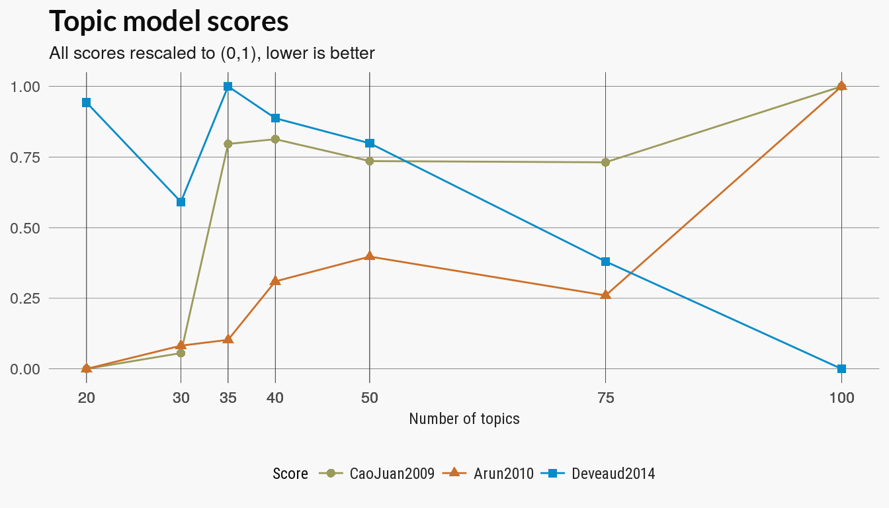
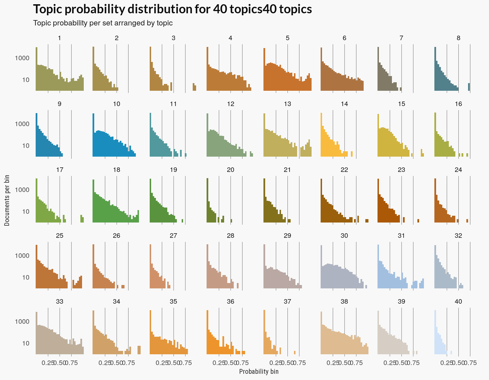

Training the model
Nathanael Aff
Last updated: 2017-09-05
Code version: 35191de
How many themes?
What number of color themes are there in the Lego dataset? LDA can be thought of as an unsupervised clustering algorithm. Like K-means, the number of clusters or topics is set by the user. In our case, the Lego sets are associated with a theme and some of those themes are associated with a parent theme. It is possible these themes can serve as a category label for the color themes we plan on discovering with the LDA algorithm. Without further exploration we don’t know, however, whether color themes match the lego theme categories. In fact, there are some themes, like the “Supplemental”, that we can probably expect to have no color theme.
For the following I’m going to first use cross-validation to choose the number of topics based on perplexity, a measure of the goodness of fit of our topic model. Then I’ll see how well the learned number of topics matches the theme labels of the lego set. For the theme labels I use the given parent id of the lego set and all sets with no parent id are assigned their own id as theme label.
Connecting to database
Assigning themes to theme_df
Assigning sets to sets_df
Disconnecting from database
Assigning full set set inventories to 'set_colors' Assigning values to total_words
Assigning tidy set and color dataframe to 'set_words'
Creating sparse document term matrix (tm-package) and assigning to 'dtm' Training the models
I used the latent Dirichlet allocation method of the topicmodels package. I used the default variational method; using a Gibbs sampling is also an option.
Although there are only 125 colors that make up the Lego ‘vocabulary’, there were 10,000 sets in the data I used to train the model. Training the models is computationaly intensive so I’d recommend running the code on a sample if you intend on trying this out yourself. The total running time was several hours on a decent size AWS instance.
I’m following the basic model provided by the super helpful Tidytext Mining book. I’m was just learning how to use nested dataframe patterns modelr and you can see I ended up just looping over the topic parameters for the cross validation code. I modified the modelr packages handy method creating dataframes of cross-validation sets so I could feed it the document-term matrix. This means my kfold method copies rather than references the data which isn’t memory efficient.
perplexities <- readRDS(here::here("inst", "data", "perplexity_all.RDS"))Perplexity
Definition of perplexity.
The average perplexity scores level off at around 40-50 topics. The perplexity scores for sets get worse as we add more than 50 topics although at least one training set improves. Based only on the perplexity scores I’d probably settle with a model with 50 topics.
perplexities %>%
ggplot(aes(n_topic, perplexity)) +
geom_point(aes(colour = fold), size = 2) +
geom_line(aes(n_topic, perplexity, group = fold, colour = fold)) +
scale_color_manual(values = pal21(), guide = guide_legend(title = "Folds")) +
geom_smooth(se = FALSE, colour = "#2f2f2a") +
scale_x_continuous(breaks = perplexities$n_topic) +
labs(
x = "Number of topics", y = "Perplexity",
title = "Perplexities scores for LDA models",
subtitle = "Perplexity (lower is better) of holdout sets for 5-fold cross-validation"
) +
legolda::theme_scatter(bgcol = "#f8f8f8") 
ntopics <- c(20, 30, 35, 40, 50, 75, 100)
# Train LDA models on full data set
if (!from_cache) {
lda_models <- c(20, 30, 35, 40, 50, 75, 100) %>%
purrr::map(LDA, x = dtm, control = list(seed = 1))
}The ldatuning package offers several more methods for evaluating the number of topics in LDA model. I’m not familiar with the metrics but I computed these metrics for most of the models.
The results below don’t give a clear picture on which models are better. Taking a consensus of the three could result in choosing models with either 30 or 75 topics.
lda_models <- readRDS("~/devel/R-proj/lego-lda/inst/data/lda_models_all.RDS")
lda_metrics <- legolda::score_models(lda_models, dtm, topics = ntopics)
plot_lda_scores(lda_metrics, title)
We also computed coherence based on : From the SpeedReader packages
cohdf <- readRDS(here::here("inst", "data", "coherence.RDS"))
cohdf$topn <- forcats::fct_inorder(cohdf$topn)
# TODO: sort number of terms in order
cohdf %>%
ggplot(aes(x = ntopics, y = coherence, group = topn)) +
geom_point(aes(colour = topn, group = topn), size = 2) +
geom_line(aes(color = topn)) +
scale_color_manual(values = pal21(), guide = guide_legend(title = "Number of terms")) +
scale_x_continuous(breaks = cohdf$ntopics) +
labs(
x = "Number of topics", y = "Coherence",
title = "Term coherence of LDA models",
subtitle = "Coherence scores (higher is better) for top 3, 5 and 10 terms"
) +
theme_scatter(bgcol= "#f8f8f8")
Lastly, the learned clusters were compared to ‘ground truth’ labels, which I took to be each sets ‘parent id’. Any set that was a top level parent was assigned it’s own id. This left 125 parents for the 10713 lego sets included in the analysis. Of those, ony 68 or so were also parents of some other set. This means there are a good number of themes that aren’t parent themes but are top-level themes.

Following the tidytext book, look at the distribution over topics.
